Last updated: 2026-08-17
Checks: 6 1
Knit directory: pumseq/
This reproducible R Markdown analysis was created with workflowr (version 1.7.0). The Checks tab describes the reproducibility checks that were applied when the results were created. The Past versions tab lists the development history.
The R Markdown file has unstaged changes. To know which version of
the R Markdown file created these results, you’ll want to first commit
it to the Git repo. If you’re still working on the analysis, you can
ignore this warning. When you’re finished, you can run
wflow_publish to commit the R Markdown file and build the
HTML.
Great job! The global environment was empty. Objects defined in the global environment can affect the analysis in your R Markdown file in unknown ways. For reproduciblity it’s best to always run the code in an empty environment.
The command set.seed(20260202) was run prior to running
the code in the R Markdown file. Setting a seed ensures that any results
that rely on randomness, e.g. subsampling or permutations, are
reproducible.
Great job! Recording the operating system, R version, and package versions is critical for reproducibility.
Nice! There were no cached chunks for this analysis, so you can be confident that you successfully produced the results during this run.
Great job! Using relative paths to the files within your workflowr project makes it easier to run your code on other machines.
Great! You are using Git for version control. Tracking code development and connecting the code version to the results is critical for reproducibility.
The results in this page were generated with repository version 9f6d867. See the Past versions tab to see a history of the changes made to the R Markdown and HTML files.
Note that you need to be careful to ensure that all relevant files for
the analysis have been committed to Git prior to generating the results
(you can use wflow_publish or
wflow_git_commit). workflowr only checks the R Markdown
file, but you know if there are other scripts or data files that it
depends on. Below is the status of the Git repository when the results
were generated:
Ignored files:
Ignored: analysis/qtl_mapping_summary_cache/
Unstaged changes:
Modified: analysis/qtl_mapping_betabinomial_site26.Rmd
Note that any generated files, e.g. HTML, png, CSS, etc., are not included in this status report because it is ok for generated content to have uncommitted changes.
These are the previous versions of the repository in which changes were
made to the R Markdown
(analysis/qtl_mapping_betabinomial_site26.Rmd) and HTML
(docs/qtl_mapping_betabinomial_site26.html) files. If
you’ve configured a remote Git repository (see
?wflow_git_remote), click on the hyperlinks in the table
below to view the files as they were in that past version.
| File | Version | Author | Date | Message |
|---|---|---|---|---|
| Rmd | 9f6d867 | XSun | 2026-08-17 | update |
| html | 9f6d867 | XSun | 2026-08-17 | update |
| Rmd | 7179db5 | XSun | 2026-08-17 | update |
| html | 7179db5 | XSun | 2026-08-17 | update |
| Rmd | 40364e8 | XSun | 2026-08-17 | update |
| html | 40364e8 | XSun | 2026-08-17 | update |
suppressMessages({ library(data.table); library(ggplot2) })
knitr::opts_chunk$set(echo = TRUE, warning = FALSE, message = FALSE,
fig.align = "center", fig.width = 11)
BASE <- "/project/xinhe/xsun/pumseq/pumseq_processed/psi_qtl"
DAT <- file.path(BASE, "qtl_betabinomial/site26_page_data")
DIAG <- file.path(BASE, "qtl_betabinomial/diagnostic_figures")
pan <- fread(file.path(DAT, "geno_panels.tsv.gz"))
labs <- fread(file.path(DAT, "site_labels.tsv"))
qq <- fread(file.path(DAT, "qq2.tsv.gz"))
lam <- fread(file.path(DAT, "lambda2.tsv"))
cnt <- fread(file.path(DAT, "counts.tsv"))
patho <- fread(file.path(DIAG, "pathological_sites.txt"))
pan[, geno := factor(geno, levels = c(0, 1, 2))]
COND_LV <- c("all sites", "minus the 26 sites", "minus all U/C-aliasing sites")
GRP <- c("Mechanism A: U/C variant on the pU base",
"Mechanism A: same shape, no variant called",
"Mechanism B: one cell line dominates",
"Comparison: surviving significant hits",
"Comparison: random non-significant sites")
# Panel label. Kept short: these figures carry up to 14 facets.
mk_lab <- function(g, with_p = TRUE) {
L <- labs[group == g]
setkey(L, sid)
lab <- L[, sprintf("chr%s:%s%s\n%spooled %%pU=%.3f | %s reads",
chr, format(pos, big.mark = ",", trim = TRUE),
ifelse(snp_at_site == "", "", paste0(" (", snp_at_site, ")")),
ifelse(with_p & is.finite(nlp), sprintf("-log10p=%.0f | ", nlp), ""),
pooled_pu, format(total_depth, big.mark = ",", trim = TRUE))]
data.table(sid = L$sid, lab = lab)
}
attach_lab <- function(g, with_p = TRUE) {
d <- merge(pan[group == g], mk_lab(g, with_p), by = "sid")
ord <- labs[group == g][order(-nlp)]$sid
d[, lab := factor(lab, levels = unique(merge(data.table(sid = ord),
mk_lab(g, with_p), by = "sid", sort = FALSE)$lab))]
d
}
# ---- figure 1 style: %pU against read depth (one dot per cell line) -------
plot_pu_depth <- function(dd, title, subtitle, ncol = 4) {
ggplot(dd, aes(pu, pmax(n, 1))) +
geom_vline(xintercept = c(0, 0.5, 1), colour = "grey88", linewidth = 0.4) +
geom_point(colour = "#256abf", alpha = 0.7, size = 1.6) +
scale_x_continuous(limits = c(-0.04, 1.04), breaks = c(0, 0.5, 1),
labels = c("0", "50", "100")) +
scale_y_log10(labels = scales::comma) +
facet_wrap(~ lab, ncol = ncol) +
labs(x = "%pU in one cell line", y = "read depth (log scale)",
title = title, subtitle = subtitle) +
theme_bw(base_size = 11) +
theme(strip.text = element_text(size = 7.5), panel.grid.minor = element_blank())
}
# ---- figure 2 style: %pU against genotype at the lead cis-SNP -------------
# A boxplot IS appropriate here: we are comparing three defined groups, which is
# what a box summarises well. Groups with fewer than 5 cell lines are outlined in
# red, because a "genotype effect" resting on 2 cell lines is not interpretable.
plot_pu_geno <- function(dd, title, subtitle, ncol = 4) {
gn <- dd[, .(n_cl = .N, small = .N < 5), by = .(lab, geno)]
dd2 <- merge(dd, gn, by = c("lab", "geno"))
ggplot(dd2, aes(geno, pu)) +
geom_boxplot(aes(colour = small), fill = "grey96", width = 0.6,
outlier.shape = NA, linewidth = 0.45) +
geom_jitter(aes(size = pmax(n, 1)), width = 0.16, height = 0,
colour = "#256abf", alpha = 0.65) +
geom_text(data = gn, aes(geno, y = 1.09, label = paste0("n=", n_cl)),
size = 2.4, colour = "grey30", inherit.aes = FALSE) +
scale_colour_manual(values = c(`FALSE` = "grey45", `TRUE` = "#e34948"),
labels = c("5 or more cell lines", "fewer than 5"),
name = "genotype group size") +
scale_size_continuous(trans = "log10", range = c(0.7, 3.6),
breaks = c(10, 100, 1000, 10000),
labels = scales::comma, name = "read depth (n)") +
scale_y_continuous(limits = c(-0.04, 1.16), breaks = c(0, 0.5, 1),
labels = c("0", "50", "100")) +
facet_wrap(~ lab, ncol = ncol) +
labs(x = "copies of the ALT allele at the lead cis-SNP", y = "%pU",
title = title, subtitle = subtitle) +
theme_bw(base_size = 11) +
theme(legend.position = "bottom", strip.text = element_text(size = 7.5),
panel.grid.minor = element_blank())
}The beta-binomial cis scan produced top hits that a phenotype permutation did not displace — 19 of the 20 strongest sites under permutation were the same sites as the real top 20, none sharing a lead SNP. Permutation is supposed to destroy all genotype–phenotype signal, so those sites were being selected for some reason other than genotype.
26 sites are responsible. This page describes what they are and what removing them does to calibration.
knitr::kable(cnt, col.names = c("", "n"), caption = "Scale")| n | |
|---|---|
| sites tested in the calibration scan | 11187 |
| the 26 pathological sites | 26 |
| U/C-aliasing sites genome-wide | 1118 |
| of the 26, U/C-aliasing | 14 |
| significant hits (q<0.05) | 1385 |
| of those, U/C-aliasing | 1052 |
A companion page, the full pathology write-up, covers the statistical mechanism and the wider audit of the other significant hits.
The cis scan was rerun six times — once on the real data, once under
each of five phenotype permutations (set.seed(1000 + k),
phenotype and covariates reindexed together, genotypes untouched) — this
time keeping the site identity attached to every
p-value, which the original calibration script discarded.
Under permutation no genotype–phenotype relationship exists, so any site still returning an extreme p-value there is broken on its own terms. Two criteria:
knitr::kable(data.table(
criterion = c("nominal p < 1e-10 in at least one of the 5 permutations",
"and real -log10(p) > 10"),
`sites` = c("27", as.character(nrow(patho)))),
caption = paste("Selection used the PERMUTED data only, so looking at the real",
"QQ plot afterwards (§3) is not circular."))| criterion | sites |
|---|---|
| nominal p < 1e-10 in at least one of the 5 permutations | 27 |
| and real -log10(p) > 10 | 26 |
Of the 27 candidates, one was extreme in a single permutation by
chance. The other 26 were extreme in all six datasets —
checked individually, and their permutation-to-permutation spread is
tiny (median SD 0.57 on the -log10 p scale), so this is a
stable property of each site rather than a fluke.
P <- paste0("perm", 1:5)
lg <- melt(patho[, c("sid", "real", P), with = FALSE], id.vars = "sid",
variable.name = "dataset", value.name = "nlp")
lg[, sid := factor(sid, levels = patho[order(real)]$sid)]
ggplot(lg, aes(nlp, sid)) +
geom_line(aes(group = sid), colour = "grey70", linewidth = 0.4) +
geom_point(data = lg[dataset != "real"], aes(colour = "the 5 permutations"),
size = 1.7, alpha = 0.85) +
geom_point(data = lg[dataset == "real"], aes(colour = "real data"), size = 2.6) +
scale_colour_manual(values = c(`real data` = "#e34948",
`the 5 permutations` = "#3987e5"), name = NULL) +
labs(x = expression(-log[10]("p")~"of the site's best cis-SNP"), y = NULL,
title = "At all 26 sites the permutations reach almost the same p-value as the real data",
subtitle = "A working site would have its permutation points near 0.") +
theme_bw(base_size = 12) + theme(legend.position = "bottom")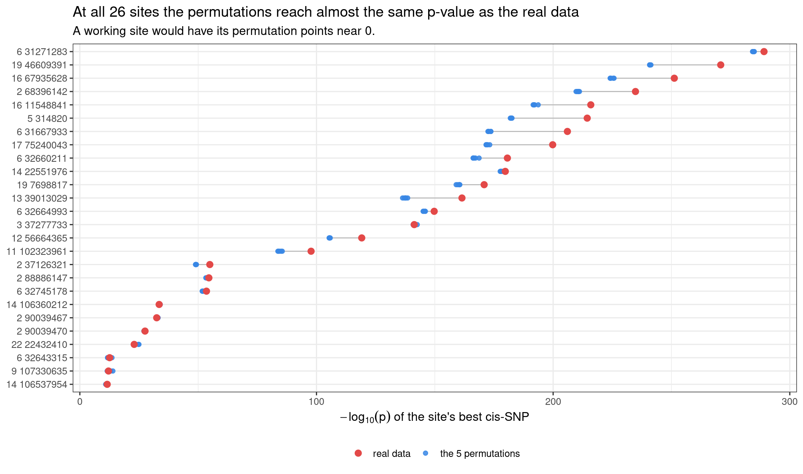
knitr::kable(labs[is26 == TRUE, .(
site = sprintf("chr%s:%s", chr, format(pos, big.mark = ",", trim = TRUE)),
`-log10p` = nlp,
`variant on the pU base` = ifelse(snp_at_site == "", "--", snp_at_site),
`pooled %pU` = round(pooled_pu, 3),
`top cell-line share` = round(top_share, 2),
`lead cis-SNP` = lead_snp,
`its distance` = sprintf("%+d bp", lead_dist),
mechanism = c(`Mechanism A: U/C variant on the pU base` = "A: U/C variant on the base",
`Mechanism A: same shape, no variant called` = "unexplained (see 2.4)",
`Mechanism B: one cell line dominates` = "B: one cell line dominates")[group]
)][order(-`-log10p`)],
caption = paste("All 26. 'top cell-line share' is the largest fraction of the",
"site's converted reads coming from one cell line.",
"The four marked 'unexplained' have no variant called on the pU",
"base and, with one exception, lack the heterozygote band that",
"aliasing would produce -- see 2.4."))| site | -log10p | variant on the pU base | pooled %pU | top cell-line share | lead cis-SNP | its distance | mechanism |
|---|---|---|---|---|---|---|---|
| chr6:31,271,283 | 289.1 | A/G | 0.431 | 0.09 | 6:31267998:T:C | -3285 bp | A: U/C variant on the base |
| chr19:46,609,391 | 270.8 | T/C | 0.561 | 0.10 | 19:46609391:T:C | +0 bp | A: U/C variant on the base |
| chr16:67,935,628 | 251.2 | A/G | 0.440 | 0.07 | 16:67935628:A:G | +0 bp | A: U/C variant on the base |
| chr2:68,396,142 | 234.8 | T/C | 0.256 | 0.12 | 2:68396170:A:G | +28 bp | A: U/C variant on the base |
| chr16:11,548,841 | 215.9 | A/G | 0.310 | 0.07 | 16:11548841:A:G | +0 bp | A: U/C variant on the base |
| chr5:314,820 | 214.4 | T/C | 0.560 | 0.05 | 5:310017:C:G | -4803 bp | A: U/C variant on the base |
| chr6:31,667,933 | 206.0 | T/C | 0.456 | 0.09 | 6:31667933:T:C | +0 bp | A: U/C variant on the base |
| chr17:75,240,043 | 199.8 | A/G | 0.592 | 0.10 | 17:75240043:A:G | +0 bp | A: U/C variant on the base |
| chr6:32,660,211 | 180.7 | A/G | 0.148 | 0.08 | 6:32659850:C:T | -361 bp | A: U/C variant on the base |
| chr14:22,551,976 | 179.8 | – | 0.416 | 0.07 | 14:22550059:C:G | -1917 bp | unexplained (see 2.4) |
| chr19:7,698,817 | 170.8 | A/G | 0.199 | 0.12 | 19:7698817:A:G | +0 bp | A: U/C variant on the base |
| chr13:39,013,029 | 161.5 | A/G | 0.500 | 0.08 | 13:39011871:A:G | -1158 bp | A: U/C variant on the base |
| chr6:32,664,993 | 149.7 | – | 0.175 | 0.14 | 6:32661941:G:A | -3052 bp | unexplained (see 2.4) |
| chr3:37,277,733 | 141.3 | – | 0.534 | 0.11 | 3:37275552:T:C | -2181 bp | unexplained (see 2.4) |
| chr12:56,664,365 | 119.1 | A/G | 0.108 | 0.21 | 12:56660300:G:A | -4065 bp | A: U/C variant on the base |
| chr11:102,323,961 | 97.7 | T/C | 0.116 | 0.26 | 11:102323961:T:C | +0 bp | A: U/C variant on the base |
| chr2:37,126,321 | 54.9 | A/G | 0.100 | 0.39 | 2:37126321:A:G | +0 bp | A: U/C variant on the base |
| chr2:88,886,147 | 54.5 | – | 0.064 | 0.91 | 2:88886429:G:A | +282 bp | B: one cell line dominates |
| chr6:32,745,178 | 53.5 | – | 0.357 | 0.23 | 6:32740437:C:T | -4741 bp | unexplained (see 2.4) |
| chr14:106,360,212 | 33.5 | – | 0.015 | 0.52 | 14:106364803:C:T | +4591 bp | B: one cell line dominates |
| chr2:90,039,467 | 32.5 | – | 0.045 | 0.50 | 2:90040779:G:A | +1312 bp | B: one cell line dominates |
| chr2:90,039,470 | 27.5 | – | 0.034 | 0.54 | 2:90038664:A:G | -806 bp | B: one cell line dominates |
| chr22:22,432,410 | 23.0 | – | 0.012 | 0.92 | 22:22430687:A:G | -1723 bp | B: one cell line dominates |
| chr6:32,643,315 | 12.6 | T/G | 0.088 | 0.63 | 6:32639017:T:C | -4298 bp | B: one cell line dominates |
| chr9:107,330,635 | 12.1 | – | 0.020 | 0.98 | 9:107326047:A:G | -4588 bp | B: one cell line dominates |
| chr14:106,537,954 | 11.6 | – | 0.020 | 0.96 | 14:106535971:A:G | -1983 bp | B: one cell line dominates |
Pseudouridine is a modified uridine — chemically still a U, and the assay detects it by reading the base at that position and scoring conversions. The readout is therefore a statement about what base is there, and it cannot distinguish two different reasons for seeing something other than a plain U:
When a common sequence variant changes that exact base from U to C, the two are indistinguishable. A cell line homozygous for the C allele reads as ~100% “modified” at every read; a heterozygote reads ~50%, because half its transcripts carry the C; a homozygous-reference cell line reads whatever the true modification rate is. The phenotype becomes a genotype assay.
That gives three consequences, all visible below:
Written against the genome this appears as C/T on the + strand and A/G on the − strand — the same U→C change on the transcript, seen from whichever strand the transcript came from. Genome-wide, 1,118 sites carry such a variant.
dA <- attach_lab(GRP[1])
plot_pu_depth(dA,
"Mechanism A: %pU forms discrete bands, because it is reporting genotype",
paste("All", uniqueN(dA$sid), "sites with a U/C variant called on the pU base.",
"Each dot is one cell line; the panel header gives the variant.",
"\nThe bands persist at every read depth, so they are not a coverage artefact."))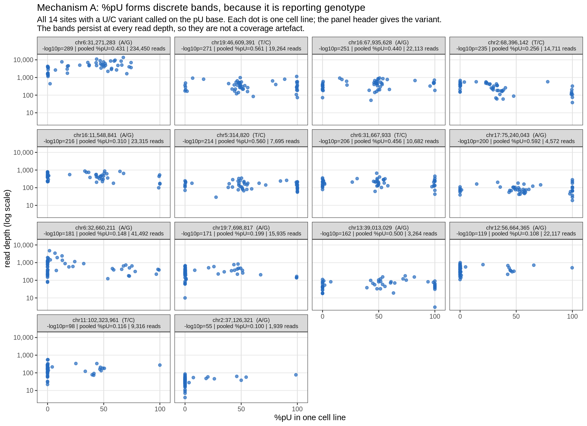
If %pU is a genotype read-out, it should line up with genotype in steps rather than as a gradual trend.
plot_pu_geno(dA,
"Mechanism A: %pU against copies of the ALT allele at the lead cis-SNP",
paste("Dot size is read depth. At most sites the three genotype groups sit at",
"separated %pU levels -- a step function rather than a dose-response.",
"\nchr6:31,271,283 is the exception, showing a gradient instead.",
"\nBoxes outlined in red rest on fewer than 5 cell lines, so their level is",
"not interpretable."))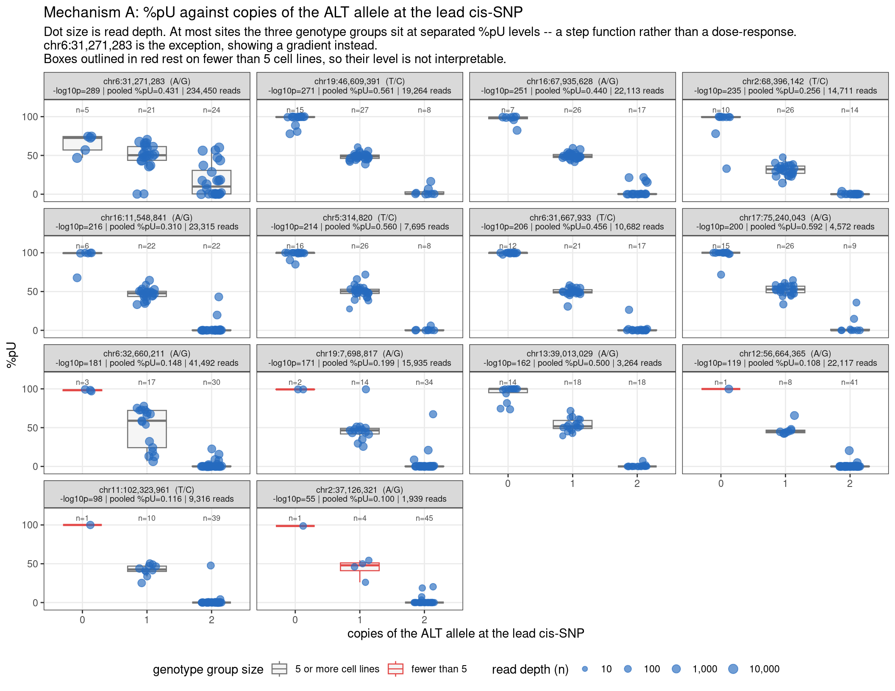
These sites have essentially no modification — pooled %pU between 1.2% and 8.8%. Most cell lines report zero converted reads. Then one cell line reports a large %pU, and it alone accounts for up to 98% of every converted read at the site.
dC <- attach_lab(GRP[3])
plot_pu_depth(dC,
"Mechanism B: a near-empty site plus one discordant cell line",
paste("A wall of cell lines at exactly 0%, and one or two lone dots to the",
"right. Nothing here supports a genotype effect."))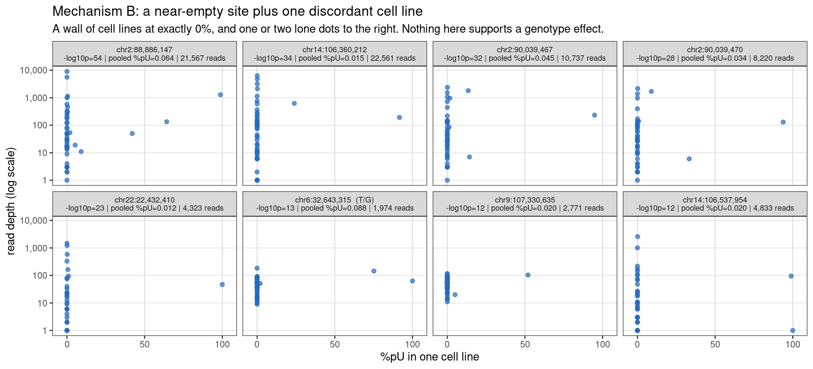
plot_pu_geno(dC,
"Mechanism B: %pU against genotype at the lead cis-SNP",
paste("The apparent 'effect' is one or two cell lines lifting a single genotype",
"group off the floor -- not a shift of the group as a whole."))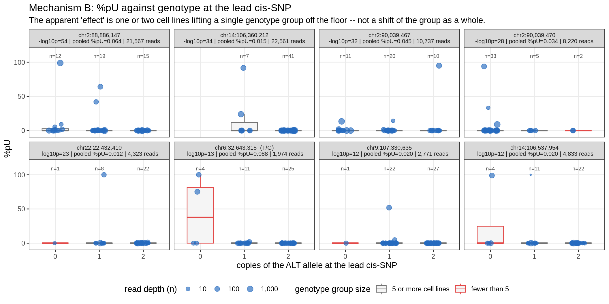
The remaining four of the 26 fit neither mechanism above. None has a variant called on the pU base, and none is driven by a single cell line. Their %pU is clustered enough to look superficially like mechanism A, which is tempting — but the counts below do not support that reading, so they are set out explicitly rather than asserted.
A codominant U↔︎C variant makes a specific prediction: three levels, including a heterozygote band near 50%, because half of a heterozygote’s transcripts carry the C. That band is the signature, and it is testable.
bin_tab <- function(g) {
ids <- labs[group == g][order(-nlp)]$sid
rbindlist(lapply(ids, function(s) {
pu <- pan[sid == s]$pu
data.table(site = sprintf("chr%s:%s", sub(" .*", "", s),
format(as.integer(sub(".* ", "", s)), big.mark = ",")),
`~0%` = sum(pu <= 0.08),
`8-42%` = sum(pu > 0.08 & pu < 0.42),
`~50% (42-58%)` = sum(pu >= 0.42 & pu <= 0.58),
`58-92%` = sum(pu > 0.58 & pu < 0.92),
`~100%` = sum(pu >= 0.92))
}))
}
bt <- bin_tab(GRP[2])
knitr::kable(bt, caption = paste("Cell lines per %pU band, for the four sites with",
"no variant call. The middle column is the",
"heterozygote band a U/C variant requires."))| site | ~0% | 8-42% | ~50% (42-58%) | 58-92% | ~100% |
|---|---|---|---|---|---|
| chr14:22,551,976 | 11 | 13 | 11 | 3 | 12 |
| chr6:32,664,993 | 25 | 6 | 4 | 5 | 10 |
| chr3:37,277,733 | 25 | 1 | 1 | 17 | 6 |
| chr6:32,745,178 | 27 | 1 | 1 | 0 | 10 |
uc_ids <- labs[group == GRP[1]]$sid
n50_uc <- vapply(uc_ids, function(s) sum(pan[sid == s]$pu >= 0.42 & pan[sid == s]$pu <= 0.58), numeric(1))
n50_ns <- bt$`~50% (42-58%)`
knitr::kable(data.table(
`site set` = c("the 14 confirmed U/C sites", "the 4 with no variant call"),
`have a heterozygote band (>=5 cell lines at 42-58%)` =
c(sprintf("%d of %d", sum(n50_uc >= 5), length(n50_uc)),
sprintf("%d of %d", sum(n50_ns >= 5), length(n50_ns)))),
caption = "The band is present at most confirmed sites and absent at most of these four.")| site set | have a heterozygote band (>=5 cell lines at 42-58%) |
|---|---|
| the 14 confirmed U/C sites | 11 of 14 |
| the 4 with no variant call | 1 of 4 |
dB <- attach_lab(GRP[2])
plot_pu_depth(dB,
"The four sites with no variant called on the pU base",
paste("Only chr6:32,745,178 shows tight clusters, and they are at 0% and 100%",
"with no 50% group. The other three are diffuse.",
"\nThis is not the clean three-level pattern of 2.2."),
ncol = 4)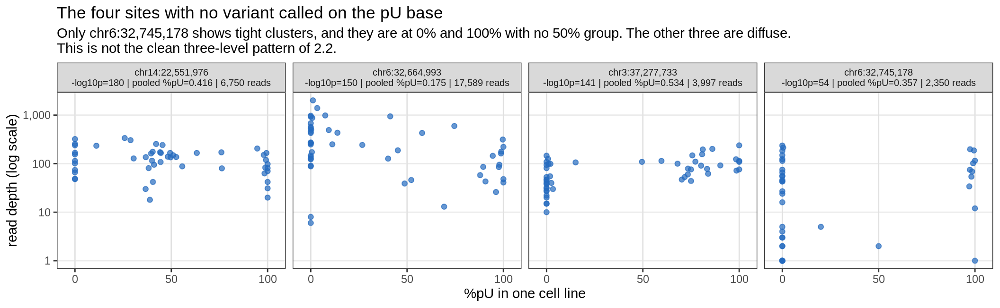
plot_pu_geno(dB,
"The same four, against genotype at the lead cis-SNP",
paste("No stepped pattern. Note also that two of the genotype-0 groups contain a",
"single cell line (red), so no level can be read off them."), ncol = 4)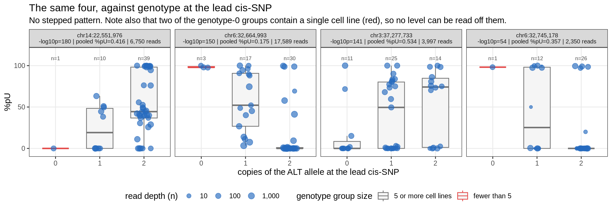
What this leaves. Only chr14:22,551,976 has a genuine three-level structure (11 cell lines in the heterozygote band), and for that site the uncalled-U/C explanation is reasonable. The other three show a two-level split — a wall at 0% and a group at high %pU, with no heterozygote band — which is not what a codominant U↔︎C variant produces. They remain unexplained: they behave pathologically under permutation but neither mechanism on this page accounts for them.
One further inconvenience for the aliasing story: the two of these four that sit in the chr6 MHC (chr6:32,664,993 and chr6:32,745,178) are among the three without the heterozygote band. The MHC is the most polymorphic and hardest-to-map region of the genome, so an uncalled variant there would be unsurprising — but it is the wrong site that looks like aliasing, so MHC location is not evidence for it. For the record, 6 of the 26 are in the MHC (chr6:28.5–33.4 Mb, ~0.16% of the genome), which is a strong enrichment and worth following up on its own terms.
Same axes, same builders. Two comparison sets: significant hits that are not U/C-aliasing and not concentration-driven, and sites drawn at random from those tested but never significant.
dD <- attach_lab(GRP[4])
plot_pu_depth(dD, "Ordinary significant hits: %pU against read depth",
"Chosen to span the whole significance range, from the strongest to the weakest.",
ncol = 3)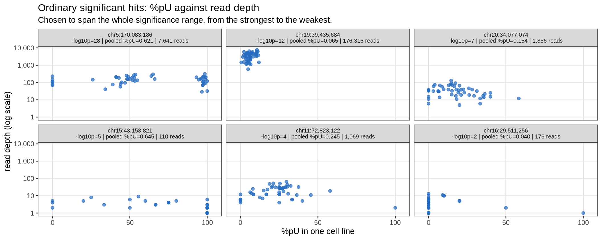
plot_pu_geno(dD, "Ordinary significant hits: %pU against genotype",
paste("Compare with 2.2: the genotype groups overlap and shift gradually",
"rather than sitting at separated levels."), ncol = 3)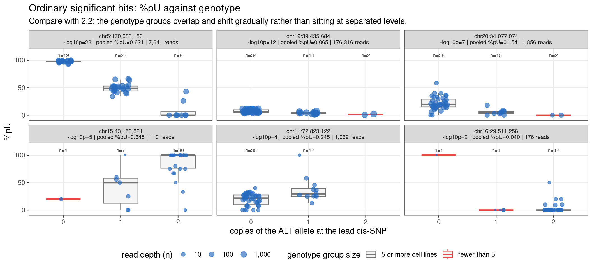
dE <- attach_lab(GRP[5], with_p = FALSE)
plot_pu_depth(dE, "Random non-significant sites: %pU against read depth",
paste("The typical site: low %pU and shallow coverage in most cell lines.",
"Shallow coverage is the norm in this dataset, not a property of the",
"pathological sites."), ncol = 3)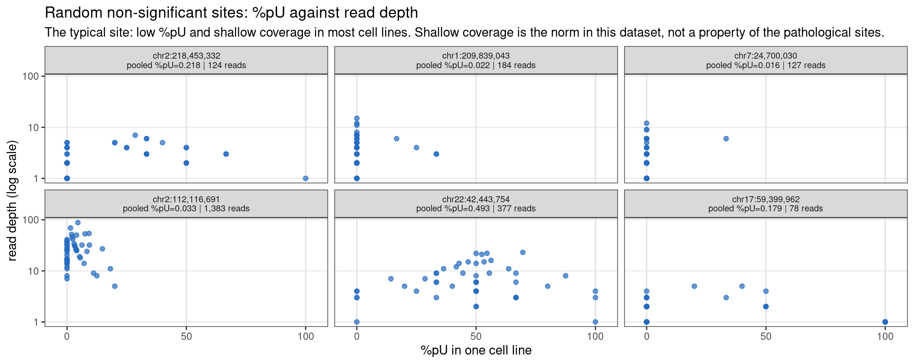
plot_pu_geno(dE, "Random non-significant sites: %pU against genotype",
"No relationship, which is what the bulk of the genome should look like.",
ncol = 3)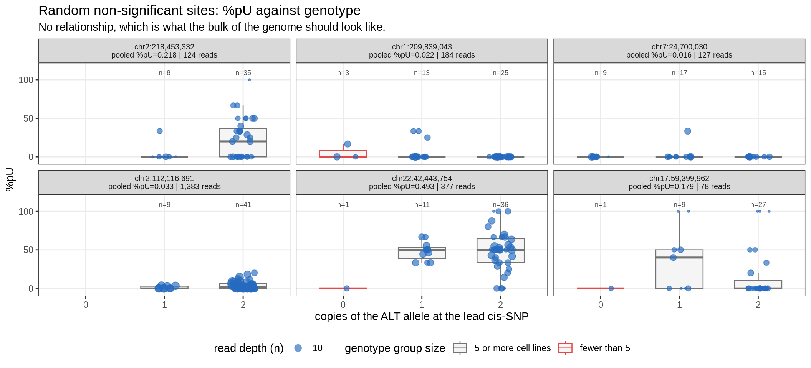
Two exclusions, each shown against the unfiltered scan. The 26 were selected from the permuted data alone (§1), so the real panels are not circular.
qq[, condition := factor(condition, levels = COND_LV)]
qq[, dataset := factor(dataset, levels = c("real", paste0("perm", 1:5)))]
COLS <- c(real = "#e34948", perm1 = "#9ec5f4", perm2 = "#6da7ec",
perm3 = "#3987e5", perm4 = "#256abf", perm5 = "#0d366b")
ggplot(qq, aes(expected, observed, colour = dataset)) +
geom_abline(slope = 1, intercept = 0, linetype = "dashed", colour = "grey45") +
geom_point(size = 0.6, alpha = 0.75) +
scale_colour_manual(values = COLS, name = NULL) +
guides(colour = guide_legend(override.aes = list(size = 2.6, alpha = 1), nrow = 1)) +
facet_wrap(~ condition, ncol = 1, scales = "free_y") +
labs(x = expression(-log[10]("expected p")), y = expression(-log[10]("observed p")),
title = "Beta-binomial LRT calibration, before and after each exclusion",
subtitle = paste("Note the free y-axis. The permutation series (blues) should",
"hug the dashed line; where they rise above it the test is",
"producing signal from shuffled data.")) +
theme_bw(base_size = 12) + theme(legend.position = "bottom")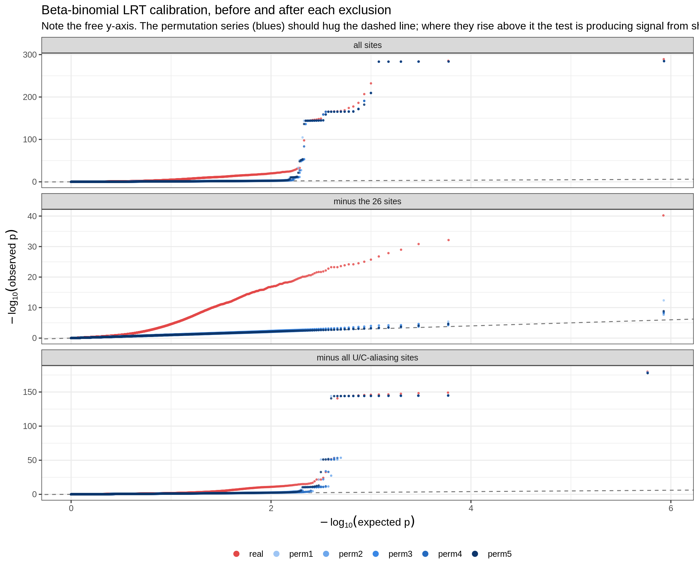
ORD <- c("real", paste0("perm", 1:5))
lw <- dcast(lam, dataset ~ condition, value.var = "lambda")
setcolorder(lw, c("dataset", COND_LV)); lw <- lw[order(factor(dataset, levels = ORD))]
knitr::kable(lw, digits = 3, caption = "lambda, the median-based inflation factor")| dataset | all sites | minus the 26 sites | minus all U/C-aliasing sites |
|---|---|---|---|
| real | 2.473 | 2.430 | 1.402 |
| perm1 | 1.195 | 1.178 | 1.066 |
| perm2 | 0.961 | 0.950 | 1.029 |
| perm3 | 1.102 | 1.089 | 1.049 |
| perm4 | 1.087 | 1.073 | 1.056 |
| perm5 | 1.034 | 1.020 | 1.038 |
tw <- dcast(lam, dataset ~ condition, value.var = "max_nlp")
setcolorder(tw, c("dataset", COND_LV)); tw <- tw[order(factor(dataset, levels = ORD))]
knitr::kable(tw, digits = 1, caption = "Largest observed -log10(p): the QQ tail height")| dataset | all sites | minus the 26 sites | minus all U/C-aliasing sites |
|---|---|---|---|
| real | 289.1 | 40.2 | 179.8 |
| perm1 | 285.0 | 12.4 | 177.9 |
| perm2 | 284.9 | 7.7 | 178.7 |
| perm3 | 284.3 | 8.5 | 178.3 |
| perm4 | 284.4 | 8.3 | 177.9 |
| perm5 | 284.6 | 8.8 | 177.6 |
The two tables move independently, and that is the main result here.
g <- function(cond, col) {
v <- lam[condition == cond & dataset == "real"][[col]]
if (col == "lambda") round(v, 3) else round(v, 1)
}
pmax_of <- function(cond) round(max(lam[condition == cond & dataset != "real"]$max_nlp), 1)
knitr::kable(data.table(
condition = COND_LV,
`real lambda` = vapply(COND_LV, g, numeric(1), col = "lambda"),
`real tail` = vapply(COND_LV, g, numeric(1), col = "max_nlp"),
`worst permuted tail` = vapply(COND_LV, pmax_of, numeric(1)),
`sites removed` = c(0L, nrow(patho),
cnt[grepl("U/C-aliasing sites genome-wide", quantity)]$n)),
row.names = FALSE,
caption = "With the phenotype shuffled the permuted tail should be near 0.")| condition | real lambda | real tail | worst permuted tail | sites removed |
|---|---|---|---|---|
| all sites | 2.473 | 289.1 | 285.0 | 0 |
| minus the 26 sites | 2.430 | 40.2 | 12.4 | 26 |
| minus all U/C-aliasing sites | 1.402 | 179.8 | 178.7 | 1118 |
Removing the 26 fixes the tail. The largest
-log10 p falls from 289.1 to 40.2 in the real data and from
285 to 12.4 in the permutations — so essentially all of the manufactured
signal lived in those 26 sites. λ barely moves (2.473 → 2.43), because λ
is computed from the median statistic and 26 sites out of
~11,000 cannot shift a median.
Removing all U/C sites fixes λ. The opposite pattern: λ drops to 1.402, a much larger change, while the tail stays at 179.8 — because the four sites with no variant call (§2.4) are not in the U/C list and are among the worst offenders.
Neither exclusion alone does both. Worth noting for interpretation: the ~1,100 U/C sites that are not among the 26 are not a calibration failure at all — permutation removes their signal normally. They are a problem because the phenotype is a genotype read-out, so a statistically sound association is being reported as a modification QTL.
sessionInfo()R version 4.2.0 (2022-04-22)
Platform: x86_64-pc-linux-gnu (64-bit)
Running under: CentOS Linux 8
Matrix products: default
BLAS/LAPACK: /software/openblas-0.3.13-el8-x86_64/lib/libopenblas_skylakexp-r0.3.13.so
locale:
[1] C
attached base packages:
[1] stats graphics grDevices utils datasets methods base
other attached packages:
[1] ggplot2_3.4.2 data.table_1.14.4 workflowr_1.7.0
loaded via a namespace (and not attached):
[1] tidyselect_1.2.0 xfun_0.38 bslib_0.3.1 colorspace_2.0-3
[5] vctrs_0.6.1 generics_0.1.3 htmltools_0.5.7 yaml_2.3.5
[9] utf8_1.2.2 rlang_1.1.2 R.oo_1.24.0 jquerylib_0.1.4
[13] later_1.3.0 pillar_1.9.0 glue_1.6.2 withr_2.5.0
[17] R.utils_2.11.0 lifecycle_1.0.4 stringr_1.5.0 munsell_0.5.0
[21] gtable_0.3.0 R.methodsS3_1.8.1 evaluate_0.15 labeling_0.4.2
[25] knitr_1.42 callr_3.7.0 fastmap_1.1.0 httpuv_1.6.5
[29] ps_1.7.0 fansi_1.0.3 highr_0.9 Rcpp_1.0.11
[33] promises_1.2.0.1 scales_1.2.0 jsonlite_1.8.7 farver_2.1.0
[37] fs_1.5.2 digest_0.6.29 stringi_1.7.6 processx_3.5.3
[41] dplyr_1.1.2 getPass_0.2-2 rprojroot_2.0.3 grid_4.2.0
[45] cli_3.6.2 tools_4.2.0 magrittr_2.0.3 sass_0.4.1
[49] tibble_3.2.1 whisker_0.4 pkgconfig_2.0.3 rmarkdown_2.21
[53] httr_1.4.5 rstudioapi_0.14 R6_2.5.1 git2r_0.30.1
[57] compiler_4.2.0